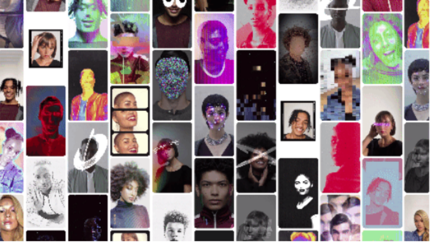

Music Protrait
藝術家郭佩奇，延續其創作脈絡，以音樂可以反映人心的概念，每一首歌都代表著一個時代的記憶，將聲音肖像系列作品轉換成可以與觀眾互動版本，用音符拼湊出人像，可以自行選擇代表自己的音樂，並且可以聽到音樂人像的聲音，透過手機裝置連結Facebook與Instagram 開啟作品互動，並可由觀眾上傳到自己的社群平台，反映在疫情過後，社群平台儼然成為人類溝通的媒介、或是商業行為，藝術作品該呈現怎麼樣的面貌，也可以由觀眾自己決定。

Kuo Pei-Chi

郭佩奇，畢業於國立台北藝術大學新媒體藝術研究所，作品實驗聲音藝術的可能性; 2012年開始發展《聲音肖像》系列，結合音樂、聲音與視覺藝術，從體驗社會環境氛圍，善於將人與人之間的政治、權力與矛盾關係轉化成創作。郭佩奇的創作圍繞著台灣與國際間，不管是兩岸議題，或是與國際政治情況的關係，反映台灣人自身意識形態的矛盾與衝突。現為專職藝術家，曾於2017年至泰國「Art No Wall」計劃交流展覽，作品並收藏於泰國孔敬大學美術館，2019年至新加坡參與「新加坡小品2:1：台星對話」交流聯展。
Go To Art Work